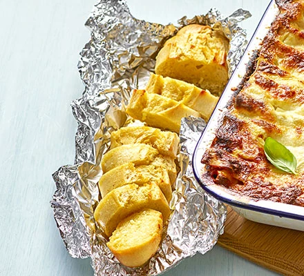

Crusty Garlic Bread

Get the kids in the kitchen to make this simple side dish - pop any extra garlic butter into the fridge or freezer for a busy weeknight.
Ingredients
- 60g butter, softened
- 2 garlic cloves, crushed
- 1 part-baked white baguette (about 150g)
Method
- Put the butter in a bowl, add the garlic and mix well. Spoon the butter out onto a sheet of cling film and roll up to make a sausage-shaped log. Chill for 10 mins.
- Heat oven to 200C/180C fan/gas 6. Slice the baguette into about 12 slices but not all the way through, leaving the base intact to hold it together.
- Remove the cling film from the butter and thinly slice on a chopping board. Press each butter slice between the slices of bread.
- Wrap the baguette in foil, place on a tray and bake for 5–6 mins, then peel back the foil. Cook for a further 4–5 mins to crisp up.